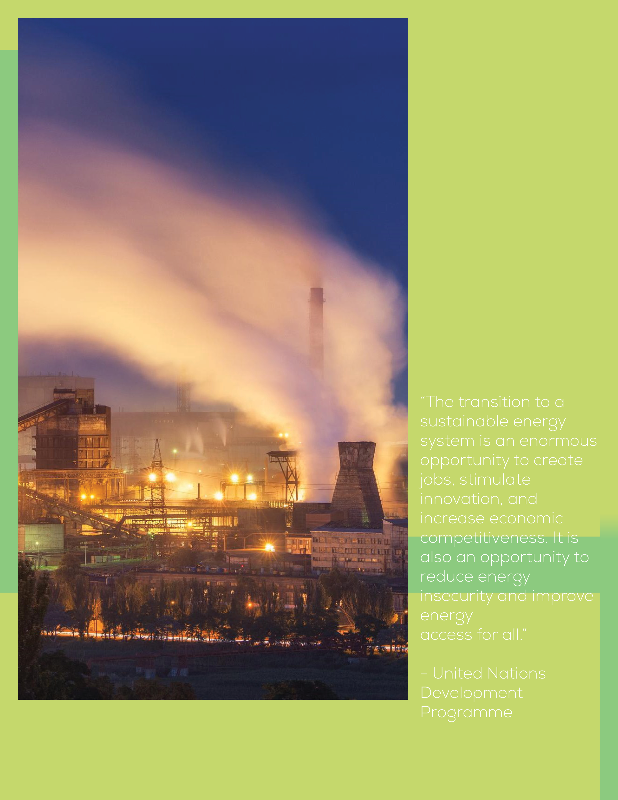

I was able to make and separate the logo move in a fascinating way by using anchor points, the mask, and the transform. The use of several points allowed the logo's components to be moved or transformed into different locations within the frame, and the mask allowed the logo to be divided into two halves rather than one. Also making the animation longer and smoother was made possible by using the timeline.
As the world population continues to grow, so does the demand for goods and services. One sector that is at the forefront of meeting this demand is manufacturing. However, with the increasing focus on environmental sustainability, it has become increasingly clear that traditional manufacturing practices are not sustainable in the long run. This is why I have chosen to discuss the importance of transitioning to sustainable forms of energy and renewable materials in the manufacturing industry.

Through the editorial montage that I have created, my aim is to showcase the potential of using waste as a resource for creating new materials. We live in a world where we generate vast amounts of waste every day. However, by repurposing this waste and using it to create new materials, we can reduce our reliance on non-renewable resources and contribute towards a more sustainable future.
One of the key challenges in visualizing data related to sustainable manufacturing is the lack of awareness about how much of the waste we generate is actually recycled. This is why it is essential to educate people about the importance of recycling and encourage them to adopt more sustainable practices in their daily lives. By doing so, we can reduce the amount of waste that ends up in landfills and create a more circular economy.
Furthermore, by transitioning to renewable energy sources such as solar, wind, and hydro power, the manufacturing industry can significantly reduce its carbon footprint. These sources of energy are not only renewable but also produce fewer emissions compared to traditional sources such as coal and natural gas. This would not only benefit the environment but also reduce manufacturing costs in the long run.
The challenges of using Photoshop, Illustrator and InDesign were knowing what formats to use so that all the files can connect together. My position on the subject has not changed because there are numerous ways for people to recycle or for businesses to use garbage to make products and minimize the production of plastic. forms of energy and renewable materials in the manufacturing industry is not only essential for the environment but also makes economic sense. By repurposing waste and using renewable energy sources, we can create a more sustainable future for ourselves and future generations. It is up to us to take the necessary steps towards a greener future.
